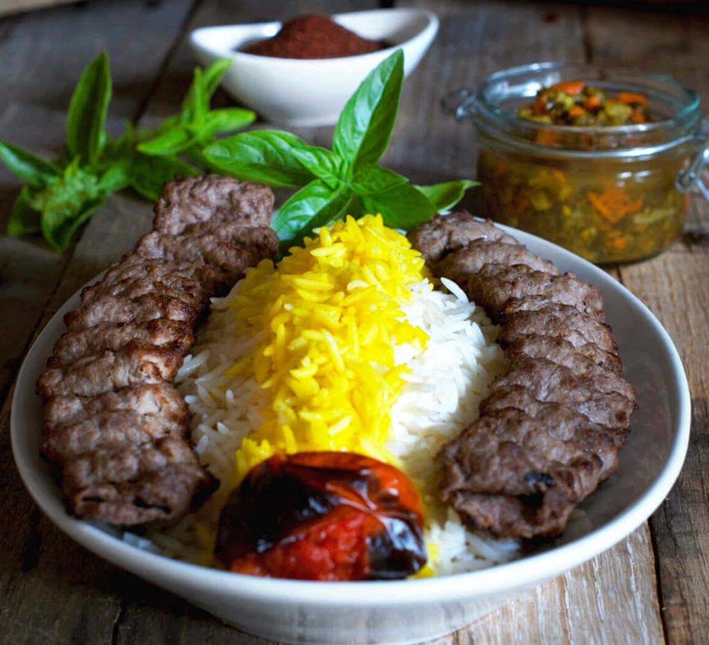
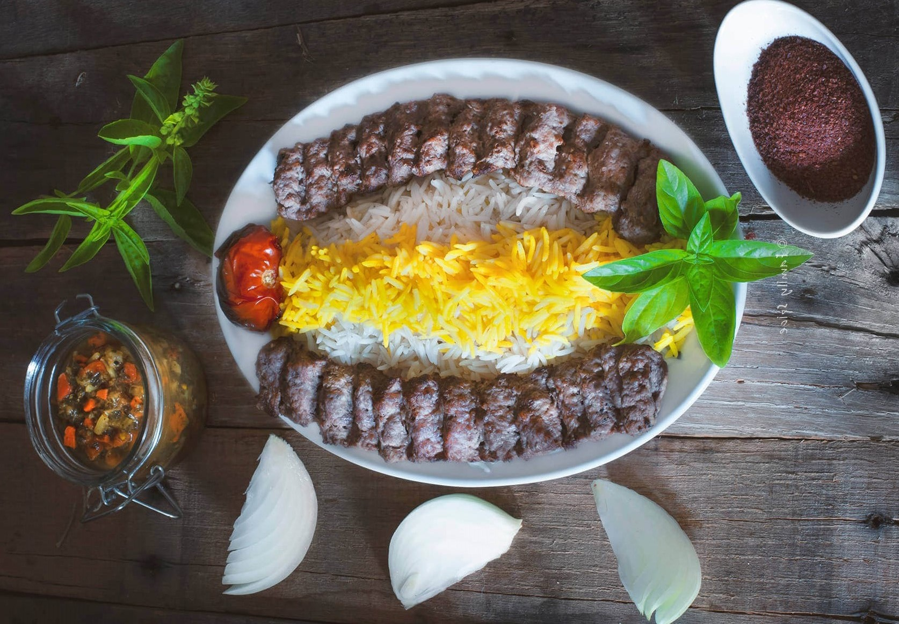
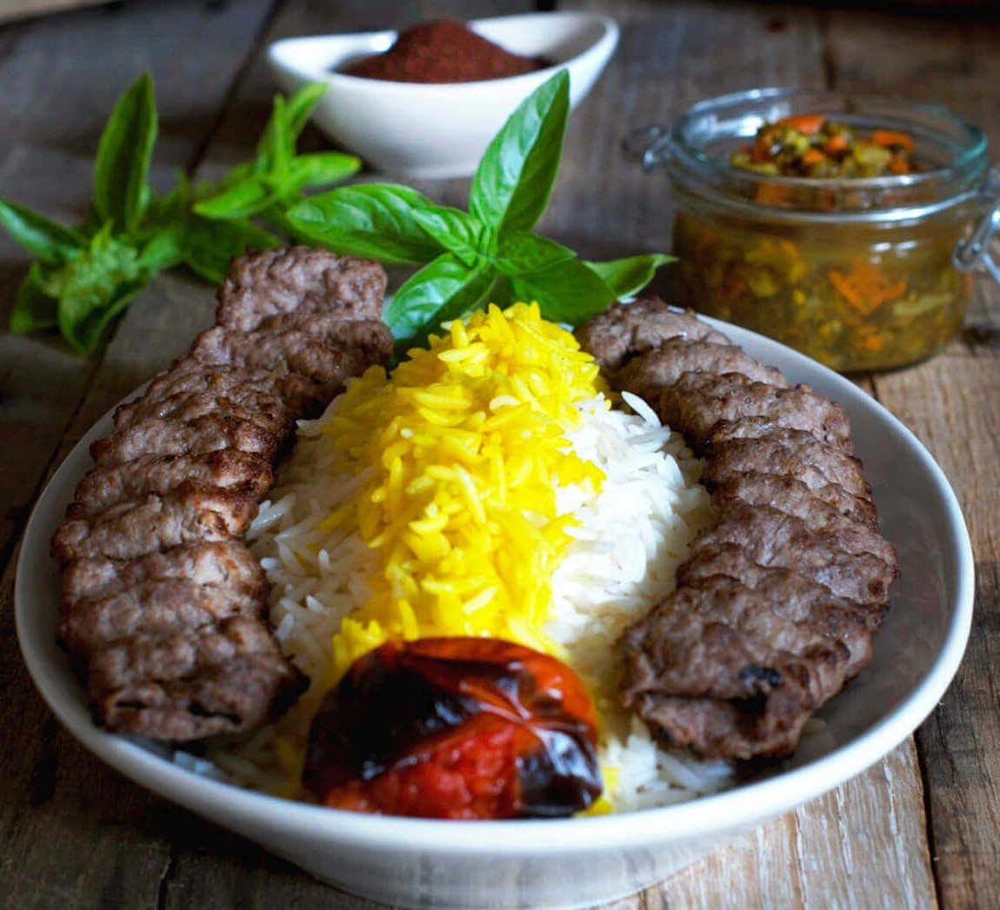
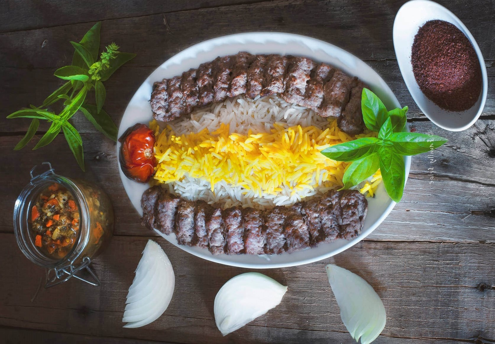

Kabob Koobideh (Persian Ground Beef Kabob, lamb and rice)

 



Persian kabob polo is pretty special. There are many varieties available, from beef to chicken to lamb. Koobideh kabob is made with minced beef (aka ground beef). Sometimes it is a mixture of ground lamb and beef, depending on personal taste.
Koobideh does not have a long list of ingredients, but don’t let that fool you. The flavor is incredible. Like most home cooks, both my mother-in-law and my grandmother do not work in exact measurements. They measure everything by sight and feel.
So I would run to the measuring spoons to make sure I wrote everything down exactly as every chiefs explained.
Ingredients:
- 1 kg / 2.2lbs ground lamb or beef (ideally lamb shoulder or 25% fat beef)
- 3 onions
- 4 tbsp butter
- 1 tsp black pepper
- 1 tsp ground paprika
- 1 tsp baking soda
- 1 tsp salt
- 1/4 tsp ground saffron
- 2 ice cubes to bloom the saffron
Directions:
1. Grate onions using a food processor.
2. Place the onion mixture into a blender and puree until smooth, about 2 minutes.
3. Kabob will not hold its shape if mixture has too much water. Reserve Place the onion mixture in a strainer over a bowl and drain the juice. the onion juice.
4. Using the food processor again, but with the chopping blade, place meat and salt in alternating layers with the onion mixture.
5. Add onion juice little by little if mixture is dry. Meat-onion mix should have elasticity and stretch to it.
6. Put kabob mix into big bowl and knead like dough. The more you knead the kabob mix, the lighter the kabob. Texture should be airy, not a solid mass like in a hamburger. Kabob mix shouldn't be sticking to your hands.
7. Allow kabob to marinate in a refrigerator in a covered bowl for 2-4 hours.
8. Remove kabob mixture from the refrigerator and start your charcoal at least 30 minutes prior to grilling.
9. The amount of meat you use, depends on the size of skewers you have. Long flat skewers work best with ground beef kabob as it holds the meat better than a thin round skewer. For our skewers we started with a baseball-size ball of kabob mix.
10. Gently pierce the meat patty with your skewer and slide it down to the middle of the skewer. Use reserved onion juice or water to keep your hands moist and to keep them from sticking to the meat.
1. Softly squeeze the meat flat as you position the meat onto the skewer. Make sure you,leave room on either ends of the skewer as it rests over your grill.
12. Using two fingers to mimic scissors, pinch both ends of the kabob meat, cutting off any excess.
13. Also using two fingers softly squeeze down the skewer leaving ridges.
14. Place skewers on the grill. The meat should not touch any grill plates. Instead the skewers should be propped up over your coals or flame. You know your grill is ready when you hold your hand over the grill for 3 seconds and your hand feel too hot to remain there.
15. Cook until done, approximately 15-20 minutes, turning the skewers every minute to evenly cook. If you wait too long and cook one side too much before turning the skewer, your kabob will fall off the skewer.
16. As kabobs are done, remove from grill and remove meat from skewers by grabbing it with a sheet of lavash bread and sliding it down the skewer.
17. Place the kabob on a serving dish and cover with another sheet of lavash to keep the meat warm.
Please see the the table for more info
| No |
Recipes |
Amount |
No |
Recipes |
Amount |
No |
Recipes |
Amount |
No |
Recipes |
Amount |
No |
Recipes |
Amount |
No |
Recipes |
Amount |
No |
Recipes |
Amount |
No |
Recipes |
Amount |
No |
Recipes |
Amount |
| 1 |
2.2lbs ground lamb or beef |
500g |
2 |
onions |
600g |
3 |
butter |
150g |
4 |
black pepper |
15g |
5 |
ground paprika |
15g |
6 |
baking soda |
15g |
7 |
salt |
15g |
8 |
ground saffron |
20g |
9 |
ice cubes to bloom the saffron |
50g |
- Tomatoes
- basil
- sliced red onions
- sumac
- flatbread or rice to serve with
{kind=link}